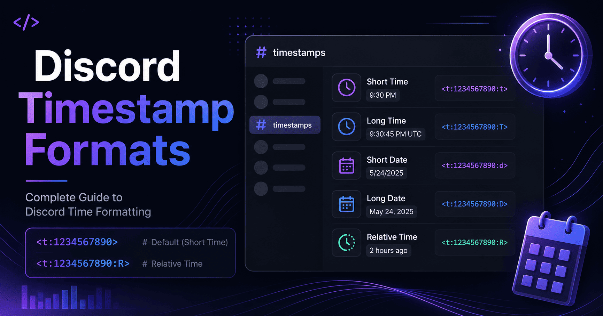

Discord Timestamp Formats Explained (All 7 Formats with Examples)

I still remember the day the little letter finally made sense to me. I had been copying Discord timestamp codes for weeks, changing the long number in the middle, and never really touching the letter at the end. It worked, so I left it alone. Then a friend asked why his countdown was not counting down, and I realized he had used the wrong style. One letter was the whole difference.
That is the thing about Discord timestamp formats. The syntax barely changes. You are almost always just picking a single letter, and that letter decides whether people see a bare clock time, a full written date, or a live countdown that updates on its own. Get it right and your message reads like a pro made it. Get it wrong and you confuse the very people you were trying to help.
In this guide I am going to break down all seven formats, one at a time. For each one you will get its purpose, the exact syntax, what people actually see, the best times to use it, the mistakes that trip folks up, and a real example you can copy. I will also cover how these behave on mobile versus desktop, plus a troubleshooting section for when a timestamp refuses to show up.
You do not need any coding background to follow along. If you can paste text into a chat box, you have all the skills you need. My goal is that by the end you will know which format to reach for without even thinking about it.
Let us dig in.
TL;DR
- Every timestamp follows
<t:UNIX:STYLE>, and the style is one letter. - The seven styles are
t,T,d,D,f,F, andR. - They all share the same Unix number and only change the display.
- Leave the letter off and Discord defaults to
f. - Use
ffor daily posts andRfor countdowns. Those two cover most needs.
A quick look at the syntax
Before we go format by format, let us make sure the shape is clear. Every Discord timestamp looks like this:
<t:1700000000:F>The number in the middle is a Unix timestamp. That is simply a count of seconds since January 1, 1970, and it pins down the exact moment in time. The letter after the second colon is the style. That letter is the main character of this whole article, because swapping it changes everything about how the moment appears.
One important note up front. Discord shows each format in the reader's own timezone and language. So the examples below reflect what an English speaker in the United States would see. Someone in Berlin or Mumbai sees the same instant, just shaped to fit their region. That is a feature, not a bug, and it is exactly why these codes beat typing out times by hand.
If you do not feel like memorizing the syntax, you do not have to. The Discord Timestamp Generator builds every one of these formats for you from a simple date picker, so you can just copy the style you want. I will still walk through each letter below, because knowing what they do helps you pick the right one fast.
All 7 formats compared
Here is the entire set in one table. Every row uses the same Unix number, 1700000000, so you
can see how just the letter changes the result.
| Style | Name | Code | What you see |
|---|---|---|---|
t | Short Time | <t:1700000000:t> | 10:13 PM |
T | Long Time | <t:1700000000:T> | 10:13:20 PM |
d | Short Date | <t:1700000000:d> | 11/14/2023 |
D | Long Date | <t:1700000000:D> | November 14, 2023 |
f | Short Date/Time | <t:1700000000:f> | November 14, 2023 10:13 PM |
F | Long Date/Time | <t:1700000000:F> | Tuesday, November 14, 2023 10:13 PM |
R | Relative Time | <t:1700000000:R> | 2 years ago |
Notice the pattern. The lowercase and uppercase letters tend to pair up, with the uppercase version being the longer, more detailed one. Once that clicks, the whole set is easier to remember. Now let us take each format on its own.
Short Time (t)
Purpose. Show a clean time of day with nothing else attached. No date, no seconds, just the clock.
Syntax.
<t:1700000000:t>What you see. Something like "10:13 PM." It is short, tidy, and easy to read at a glance.
This is my go-to for casual reminders where everyone already knows the day. If I post in the morning that a raid starts later, a plain time is all people need. Anything more would just be noise.
- Best use cases: same-day reminders, quick "starts at" notes, casual pings.
- Common mistake: using it for events days away, which leaves readers guessing which day you mean.
Long Time (T)
Purpose. Show the time of day including seconds.
Syntax.
<t:1700000000:T>What you see. A time like "10:13:20 PM," with the seconds spelled out.
Honestly, most people will never need this one. I only reach for it when seconds actually matter, like a speedrun start, a precise "go live" moment, or a synchronized countdown where a few seconds could throw things off. For everyday chat, the extra digits are overkill.
- Best use cases: speedruns, exact go-live moments, timing-sensitive events.
- Common mistake: using it in normal announcements, where the seconds add clutter without adding value.
Short Date (d)
Purpose. Show a compact numeric date with no time attached.
Syntax.
<t:1700000000:d>What you see. A short date like "11/14/2023."
This one is handy for deadlines and simple date references. Here is the catch though. The order of day and month flips depending on the reader's region. An American sees month first, while much of the world sees day first. That is actually a strong reason to use the code instead of typing a date yourself, since Discord sorts out the local order for you.
- Best use cases: deadlines, submission dates, short date mentions.
- Common mistake: assuming everyone reads it in your own day-month order, then getting confused replies.
Long Date (D)
Purpose. Show a full written date that leaves no room for confusion.
Syntax.
<t:1700000000:D>What you see. A spelled-out date like "November 14, 2023."
When a date needs to stick in people's minds, this is the one I use. Writing the month out in full kills the day-month mix-up dead and reads far cleaner than a string of slashes. For birthdays, anniversaries, or the date a season ends, it is a solid pick.
- Best use cases: memorable dates, formal notices, anything people need to remember.
- Common mistake: pairing it with a separate typed-out time instead of just using a combined format.
Short Date/Time (f)
Purpose. Combine a written date and a time into one clean line. This is the default format.
Syntax.
<t:1700000000:f>What you see. A date and time like "November 14, 2023 10:13 PM."
If you skip the style letter entirely and write only <t:1700000000>, Discord falls back to
this format. In my opinion it is the best all-rounder. It gives enough detail to be clear without piling on
extras. For most everyday posts, this is the sweet spot, and it is the one I use more than any other except
the relative style.
- Best use cases: everyday event posts, general reminders, most announcements.
- Common mistake: assuming it is the "boring" option and reaching for a fancier format when this one already does the job.
Long Date/Time (F)
Purpose. Show the full picture, including the weekday, for zero ambiguity.
Syntax.
<t:1700000000:F>What you see. The complete version, like "Tuesday, November 14, 2023 10:13 PM."
This is the full monty. Adding the weekday up front helps people place the event in their week at a glance,
which is genuinely useful for planning. When I post a big announcement, like a season launch or a community
meeting, I use F every time. It signals that the event is a real deal and it removes any excuse
for showing up on the wrong day.
- Best use cases: major announcements, scheduled meetings, launches, anything you cannot afford people to miss.
- Common mistake: using it for tiny casual pings, where the full weekday and date feel like too much.
Relative Time (R)
Purpose. Show how far away a moment is, and keep updating on its own.
Syntax.
<t:1700000000:R>What you see. A living phrase like "in 3 hours" or "2 days ago" that changes as time passes.
I saved the best for last, because this is the format I lean on the most. The relative style does not sit
still. You post it once and it counts down, or counts up, all by itself. Nobody has to do any mental math,
and nobody has to ask how long is left. Giveaways, stream reminders, event countdowns, they all come alive
with R. If you only master one format, make it this one.
- Best use cases: countdowns, giveaways, hype posts, "how long ago" references.
- Common mistake: using it for a fixed calendar date, where readers may want the exact day rather than a rough "in 6 days."
Pro tip
You do not have to choose just one. Pair a fixed format with a relative one in the same line. Show the full date and time, then add the countdown in brackets right after. Readers get the exact moment and the "how soon" together, and that combo is hard to beat.
Best practices and when to use each
After making hundreds of these for events, I have settled into a few simple habits. They keep my posts clear and save me from redoing them later.
- Default to
f. For most posts, the short date and time is all you need. - Use
Ffor the big stuff. When an event truly matters, the full weekday and date pull their weight. - Reach for
Ron anything live. Countdowns and hype posts feel more alive with a ticking timer. - Keep
tfor same-day pings. When the day is obvious, a bare time is cleaner. - Save
Tfor precision. Only bring in seconds when seconds actually matter. - Preview before you post. A five-second check beats a wave of confused questions later.
Here is my quick mental shortcut. If people need to plan around it, use a dated format. If people need to feel the clock ticking, use relative. If the day is already clear, a plain time will do. Nine times out of ten, that simple rule points me to the right letter.
Mobile vs desktop behavior
Good news here. Discord timestamps render the same across the board. Whether your members are on the desktop app, the web version, or the phone apps, the same code produces the same format. You do not need to make separate versions for different devices.
The one thing that shifts is the local part, and that shift is by design. Each device pulls the timezone and language from its own settings. So a phone set to London time shows the London version, and a laptop set to New York time shows the New York version. The style you picked, though, stays put. A relative timestamp keeps counting on mobile just like it does on desktop.
One small thing I have noticed on phones is that very long formats like F can wrap onto two
lines in a narrow chat. It still reads fine, but if you are posting to a busy mobile-heavy server, a shorter
format sometimes looks tidier. That is a matter of taste more than a rule.
Common formatting mistakes
I have made just about every one of these at some point, so learn from my slip-ups instead of your own.
- Milliseconds instead of seconds. Discord wants seconds, which is usually a 10-digit number. Paste a 13-digit millisecond value and the date leaps far into the future.
- Missing the closing bracket. Drop the final
>and Discord shows the raw code instead of a nice date. - Wrapping it in backticks. Put a code block around it and Discord treats it as literal text, so it never renders.
- The wrong style letter. These are case sensitive. A lowercase
fand an uppercaseFare not the same thing. - Timezone slip-ups. If you build the Unix number from the wrong timezone, everyone sees the time shifted. This is the top cause of "that showed the wrong time" complaints.
Troubleshooting
When a timestamp misbehaves, it is almost always one of a handful of things. Run through this quick checklist and you will usually spot the culprit fast.
The code shows as plain text. Check for a missing bracket first, then make sure you did not
wrap it in backticks. The code must be posted as normal text in the exact shape <t:NUMBER:STYLE>.
The date is wildly in the future. You almost certainly used a millisecond value. Count the digits. If there are 13, trim the last three and try again.
The time is off by a set amount. This points to a timezone issue when the Unix number was created. The easiest fix is to rebuild the code with a Discord timestamp converter that reads your local zone for you, then check the preview before you post.
The relative timer is not moving. Give it a moment. Relative timestamps update on a short cycle rather than every single second, so a countdown may seem still for a few seconds before it refreshes.
Nothing renders at all. Double-check the letter is one of the seven valid styles. A typo
like :x will not resolve into anything.
Still stuck? We put together a full guide on fixing a Discord timestamp that is not working, which walks through every common error and its fix in more detail.
Wrapping up
That is every Discord timestamp format laid out end to end. The syntax never really changes. All you are choosing is one letter, and now you know exactly what each one does, when it shines, and where it trips people up.
My honest advice is to keep it simple at first. Lean on f for your everyday posts and
R for anything with a countdown. Those two will cover the vast majority of what you post. Once
they feel like second nature, the rest of the set falls into place on its own.
The next time you need to tell your community when something is happening, skip the timezone gymnastics. Pick the right format, paste it in, and let the timestamp do the talking. Your members will read it correctly, every single time, and that reliability is what keeps a community running smoothly.
Frequently asked questions
How many Discord timestamp formats are there?
Seven. The styles are t, T, d, D, f,
F, and R. They share the same Unix number and only change the display.
What is the default Discord timestamp format?
If you write only <t:UNIX> with no style letter, Discord uses f, the short
date and time.
Why is my Discord timestamp showing plain text instead of a date?
Usually a missing closing bracket, backticks around the code, or a typo in the syntax. Post it as plain text
in the exact form <t:NUMBER:STYLE> and it will render.
Do Discord timestamp formats look the same on mobile and desktop?
Yes. The same code renders the same way across desktop, web, and mobile. Each device applies its own timezone and language, but the format you chose stays consistent.